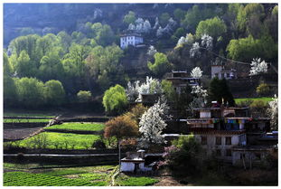
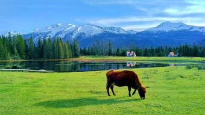

丹巴藏赛
1.简介
丹巴山寨是嘉绒藏寨中最具特色的。尤以甲居、聂呷、革什扎和巴底乡最为突出， 几百幢民居依山就势、错落有致地融于自然环境中，体现了天人合一的理念。远远 看去，充满灵气的山谷中，翡翠般的青草绿树之中，是那沉甸甸的田地和隐在密林 深处的寨房，伴着时有时无的潺潺溪流，一幅富有动感的绝妙山寨画卷随之展示在 你的眼前。2.特征
丹巴西距成都348公里。在当地，人们都将其居住的村落称为寨子，这些寨子一般 都修建在向阳的坡梁上，寨子由几十户甚至上百户人家组成。一幢一幢外形美观，风 格统一的寨房依着起伏的山势迤俪而建，高高低低、错落有致，与周围茂密的树林， 清澈的溪流，皑皑的雪峰一起构成一幅幅田园牧歌式的优美的乡村画卷。丹巴还盛产 美女，在神秘的美人谷，女孩艳丽如玫瑰，娇媚似桃花。 丹巴的山寨，旧称碉楼寨房。碉楼和寨房，原本是两类不同性质的风格建筑，如今， 在时光的流逝中，二者已有机地结合在一起。外形上，既有寨房的特征，又有碉楼的形态 。碉楼寨房一般为三层，也有四层的，一侧还配有厢房。但不论房屋和厢房如何建造，顶 层外缘都环围着黄、黑、白三种色带，这是嘉绒藏寨的一大特征。
3.区位简况
 丹巴县位于四川西部的甘孜藏族自治州东部旁，与道孚、康定县和阿坝州 小金、金川县接 壤，全县总全面积5649平方公里，辖一镇十四乡，居住着以藏族为主的15个民族共5.7万余 人。丹巴县是巴颜喀拉山脉、邛崃山脉等汇聚的地方，又是革什扎河、牦牛河、大小金川河 的发源或流径处素有“岩巅上的城”和“大渡河畔第一城”之称。这里山峦连绵起伏，湖泊星落 棋布，森林无边无际，当地藏民族把这种特征括为“山顶积雪皑皑，山腰树林葱葱，山脚海子 粼粼”。是一个深藏于横断山脉中鲜为人知的世外桃源，壮丽迷人的风光、无限神秘的美人山 谷、恬静如诗的乡土民居、独具一格的古石碉楼、多姿多彩的风情，惊现出丹巴的神奇和美丽。4.丹巴三绝
所有到过丹巴的人都会惊叹丹巴的“三绝”：甲居藏寨、碉楼群、美女。最让外部世界惊奇的是 美女：一个只有七万人的县，竟有三千多女子在成都乃至京城从事歌舞演艺职业。多年来，学 者们从神话、传说、民俗、历史、地理、生态、文化、现实各个方面进行了认真的探究，前提 是：嘉绒是美人谷；结论是：嘉绒的确是美人谷。5.美丽传说
嘉绒藏族自古至今信奉墨尔多神山，“墨”在藏语中一般指女性，也就是说，墨尔多是女神山， 是女权崇拜的象征。东女国是由女人全面管理的国家。直到今天，每年五月，人们都会在古寨 碉下，为年满17岁的女孩举行盛大隆重的成人礼，全寨男女老幼献上哈达，载歌载舞。而男孩 是没有这种待遇的。丹巴藏寨从藏史《贤者喜宴》、《西藏王臣记》、《敦煌本吐蕃历史文书》 可以查找到吐蕃以前子从母姓的历史记述。在西藏，喜马拉雅山诸峰全是女神，遍布藏区的大 地之神十二丹玛也是女神。一首藏族民歌向春季女神发出了这样的请求：“春季的庄稼女神啊/请 赐给我们土水风火吧/我这藏红花呀/正要扎下根啦。”人们拜倒在女神足下，透露出藏民族对史 前母系时代的集体追忆。这也让人对逝去不见踪影的“东女国”浮想联翩。传说，许多年前，一 只凤凰飞到墨尔多山，化作万千迷人的美女，墨尔多神山下便成了美女如云的地方。传说，东 女国女王爱泡温泉，爱吃温泉香熏的高山香梨，因此天姿国色，民间女子皆仿效，由是美女遍 国中，以至因美色亡国。6.旅游攻略
丹巴旅游资源丰富多彩，自然风光神奇美丽，“天然盆景”、党岭风光，集雪山、森林、海子、温 泉、草甸于一体；墨尔多神山，纳山、水、林、崖、洞108圣景于一炉，是休闲度假、探险旅游、 回归自然的最佳去处。走进丹巴，抬头望去，阳光流金般灿烂，云天纯净而又热烈，清澈的江水 流过开满野花的草地，风中送着自然的气息，高耸的古碉凌空挺拔，低头环顾，绿茵田野间的藏 房与巍峨的古碉相映成趣。藏寨从大金河谷层层叠叠向上攀援，一直伸延到卡帕玛群峰脚下，远 远看去，充满灵气的山谷中，翡翠般的青草绿树之中，是那沉甸甸的田地和隐在密林深处的寨房， 伴着时有时无的潺潺溪流，一幅富有动感的绝妙山寨画卷随之展示在你的眼前。只需一眼，便会 醉去。交通
1、如果是住在丹巴大酒店，由丹巴大酒店东行仅三公里，就到去甲居藏寨的岔路，再行两公里就到了。2、包车去大概60～80元/车，虽然去上寨只有4公里，但是路况很烂，全是土路。搭车去甲居下寨来回 均是3元/人，15分钟的车程，然后一路往山坡上面走，路倒是不算难走，2个小时左右 足够了。甲居藏 寨的路太窄，自驾车请注意小心行驶。各地至丹巴需先到成都后再乘汽车前往（成都城西车站每日7：00 ，有发往丹巴的车辆）。成都西门车站每天早晨均有直达丹巴的班车，丹巴县城至各旅游点均有小巴往返 。前往丹巴目前有2条路，一条是从成都出发经过都江堰、卧龙、四姑娘山、小金到丹巴，全程390公里； 另一条是是从成都出发经过雅安、康定、新都桥、塔公、八美到丹巴，全程520公里左右。
住宿
从丹巴县城到嘉绒藏寨约20公里，当日即可返回，所以食宿可以选择在丹巴。丹巴青年旅馆，床位价格在 20-50元之间。丹巴大酒店标准间价格在150-300元之间。美食
香猪腿、老腊肉、土鸡、酸菜、咂酒、蜂蜜、野生菌等。特产
雪梨、苹果、石榴、核桃、雪山大白豆、虫草、天麻、贝母、藏式头帕、藏式腰带、土陶器。娱乐
观锅庄舞、看丹巴藏戏、听嘉绒歌。节日
丹巴有许多富有民族特色的传统节日，如嘉绒藏历年、观花节、墨尔多庙会、五月赛马节、燃灯节、嘉绒藏族风情节等。哈尼村落
1.概述
 哈尼族民俗村座落于半山腰，占地约5公顷，全村有150户人家，800
多人。村寨树林异常茂密，鸟啼蝉鸣，充满了浓郁的原始乡土气息。民俗村集中体现
哈尼梯田文化的共性即森林、村庄、梯田和江河四度同构的特征，所以又被称为哈尼
族四度同构展示区。这个森林——村庄——梯田——水系“四度同构”的生态系统
，是一个活的系统，是哈尼人民改造自然，变自然生态为农业生态的独特创造，是人
类活动与自然生态完美结合的范例。
哈尼族民俗村座落于半山腰，占地约5公顷，全村有150户人家，800
多人。村寨树林异常茂密，鸟啼蝉鸣，充满了浓郁的原始乡土气息。民俗村集中体现
哈尼梯田文化的共性即森林、村庄、梯田和江河四度同构的特征，所以又被称为哈尼
族四度同构展示区。这个森林——村庄——梯田——水系“四度同构”的生态系统
，是一个活的系统，是哈尼人民改造自然，变自然生态为农业生态的独特创造，是人
类活动与自然生态完美结合的范例。
2.中国最美六大古村之一
2005年10月23日，中国最美的地方排行榜在京发布。 哀牢山的地势险峻，山高谷深，海拔在3000米与600米间变化，形成了一个寒温带、亚热 带和热带的立体气候。那片山高谷深，沟壑纵横，山地连绵，层峦叠嶂中藏着哈尼人的故 事。哈尼人用顽强的毅力在这崇山峻岭中开凿出了世界闻名的、壮美的梯田。这片土地给 了哈尼人物质所需的同时也给了我们一个美丽的艺术圣地。3.哈尼村自助游指南
红河州，地处云南省东南部，与越南接攘，因红河流经全境而得名。朱家花园：
典型的云南地区清代园林建筑的代表作。里面已由政府花巨资修葺一新，古香古色的建筑 已变成雪白的墙和金色的油漆，让人几乎想骂娘。但是里面有古代极小资的罪证，值得一去。最有看 头的是房屋的结构，主体建筑“三纵四横”，大小天井共计42个，还有古代园林建筑中无所不在的空间 美感及虽被刷上金色油漆但仍掩不住天生丽质的木雕。 门票：20元燕子洞：
距建水县城东30公里，号称亚洲第一溶洞，最有看头的是每年农历八月八日的“燕窝节“，作为候 鸟的燕子就会从北方飞回来并作窝，那时有巨多的燕子在洞口飞来飞去并发出巨响的声音，采燕窝的人就 在毫无保险措施的情况下飞檐走壁采摘燕窝，太牛了！ 门票：30元。文庙：
是继山东孔府后的全国第二大孔庙，新旧程度与观赏程度与朱家花园一样。最精彩部分是屏门上的五 层镂空木雕和石雕“龙抱柱”。 门票：20元朝阳楼：
即县城东门，建于明洪武二十二年，有小天安门之称，但比其早建21年，有些气势。 门票：无双龙桥：
距离建水县城三公里处，建于清乾隆年间，气势宏伟，保存完好。由于桥有十七孔也称十七孔桥， 工艺复杂，与赵家桥同属一个极别。 门票：无团山村：
位于建水城西13公里，村里共有晚清建筑二十多处，是个尚未怎么开发的地方，所以绝对的保持 着原汁原味，这些老房子里现在都是农民们的家。村子里最腐败豪华的当数张家花园，其它保存较完好的 有皇恩府、司马第、秀才府、东南西三个寨门、大成古寺、上庙下庙、张家宗祠等。建筑上的木雕、石雕 、砖雕都是超豪华级的，真正称得上雕梁画栋，而且图案花样同典故非常多，简直就是晚清建筑的博物馆。 门票：张家花园10元，其它无门票。 特别注意事项：大多数老房子内都有农民居住，此地民风纯朴，他们不会介意你们进去他们的家参观、拍照， 但也请你至少给人家N个微笑！如果你喜欢拍照要移动物件，请你务必还原。不要因为自己的画面需要，让人 家给你或坐或立的当背景。如果你实在需要，最好先征得别人的同意，并且回去多洗一份寄给他们。除了微笑 什么也不要给人家留下，包括垃圾。4.元阳
有全国最大面积的梯田，非常壮观，以其为素材的照片曾在全国大大小小的比赛中得奖，故是摄影 发烧友必去之地。尤其田里蓄水季节，蓝天白去朝霞白露都能在水里看到，还有一个看点就是元阳的云海，冬 季几乎天天都有，而且云海随风不断变化，真是虚无飘渺！拍摄地点(供参考)：
菁 口--最佳时间：上午8点，日出侧照； 坝达--最佳时间：下午 多依树--最佳时间：日出、上午 龙树坝--下午，特点是红色浮萍 老虎嘴--日落 门票：无。民俗：
各少数民族都有自己独特的风俗，但相同的是你能看到许多原始的自然崇拜和经历时间打磨依然不变的 纯朴。用心去看你一定会不虚此行。住宿：
上山前和老乡商量好能否住家里。没有客栈更没有招待所。至于洗澡嘛，老乡一般都在河里洗，冬天也 是如此；厕所嘛，如果上小号就随便找一树荫遮避处或无人处解决，大号嘛，嘿嘿，多走点路到厕所或树林特 别茂密处，农村厕所都差不多，不用多说了。费用老乡都说不要，你看着给吧！食:
当然也在老乡家，费用也是你自己看着给吧。 门票：又不是旅游景点，当然没有啦！5.河口
主要旅游资源：越南边镜游.民族风情住宿：
由于边贸，河口是整个红河州内消费最高的地方，客运站招待所床位20元一天，公共洗澡间及厕所。食：
肠粉是越南特色小吃，河口早点摊都有，0.5元每根。热带水果可以多吃点。越南边镜游：
可以过去看看，由于是边境，所以两边差别不大。门票：
没护照的找个满街到处都是的旅游社，一日游护照、导游、门票及中饭一顿80元。民俗：
较为有名的是红头瑶，瑶族的一个支系。图瓦村
1.基本资料
图瓦村,位于新疆阿勒泰，面 积 166万平方公里， 适宜季节为春夏秋冬，主要特点： 喀纳斯图瓦 村周围山清水秀，环境优美，是从 布尔津县前往喀纳斯湖旅游的必经之路。图瓦人仍保存着自己 独特的生活习惯和语言。地 址： 新疆喀纳斯湖南岸2-3公里处的喀纳斯河谷地带2.自然环境
在夕照中，图瓦村里那些带有尖顶的、颇具 瑞士风格的小木屋反射出一丝丝温暖的金黄色光芒 。小屋旁边的松树三三两两地散布着，全都高大笔直。村中还长有白桦树，一棵一棵散落在松 树中间，因为枝干雪白，便很显眼，再加上蓬勃的树冠，似一把把大伞。在图瓦村的背后，就 是中俄边境上的 友谊峰，西伯利亚的风从友谊峰吹过来，随着地势降低，骤然变暖，便孕育出 了这片浓密的山林。 图瓦村是个长条状的村子，由于木头小屋 方方正正，村庄看上去也显得有棱有角。村中的小路向 村子四周的 松林延伸，一进入松林便了无痕迹。放眼望去，四周的山脉像是一双大手，将这个村 庄呵护在掌心。村中有人骑马，在路上快速奔驰。村子不大，从一家到另一家，原本不费什么事， 但或许由于长久骑马的习惯，他们仍挺胸耸肩，把马打得飞快。马呢，大概也喜欢这样奔跑，从 家门口蹿起，箭一般驰向另一处人家。由于路途太短，往往只是倏忽一闪，便又停住，人从马上 下 来，进了房子，留着马在外面，低头啃吃地上的草。人和家畜在许多事情上都坚持着共同的原 则。3.敖包节
6月8日，是居住在喀纳斯的蒙古族图瓦人的敖包节。一进入院子，就闻到奶香，顾 不得旅途劳累，径直走到厨房，女主人正在制作牛奶酒，那可是为敖包节准备的食物。在村中随处转一 圈，发现 家家都在杀羊炖肉，酿 寻找色彩艳丽的秋色 相约同行旅行更精 彩 12星座的 旅游目的地驴行 日志，记录制奶酒，清洁房间，各家的院子里都搭晾着洗干净的衣服，女主人还将节日的盛装取出，一 派节日前的喜庆。祭祀
8日一大早，赶到离白哈巴村近5公里的敖包。“敖包”是蒙古语译音，也叫“鄂博”，是堆子的意思，意为 用木、石、土垒成的堆。祭祀敖包，是古老、神奇的 蒙古高原上最常见，而且最热闹的祭祀活动.眼前的敖包 已经有30年历史了，用石头垒起，六棱形造型，有三位图瓦人正拉起印有经文的彩色经旗，将白桦树条插 在敖包六边。10时左右，不时有图瓦人抱着石头走向敖包，将石头慢慢放入 敖包，还有人带来了羊头，虔诚地 放到敖包最外面一圈的大石头上。到了11时，人群一下多了许多，一家家携手走向敖包，绕敖包走一圈，然后 半跪在敖包前，双手合什，用石头抵前额，默念祈祷，最后将石头慢慢放入敖包。在离敖包十米外，图瓦人都是 男子聚一堆，女子和孩子聚一堆，分别排列成10人左右一个小圈，将每家带来的布条、牛奶酒、羊肉、奶疙瘩等 放到前排为喇嘛留的位置前面。过了11时，喇嘛来了，一身砖红的喇嘛服，严肃的表情，径直走到敖包旁边，念 着经文，将手中象征吉祥的爬山松枝叶依次放到敖包指向六个方向的大石头上。祈福
12时，敖包节正式开始了，先是 喇嘛念经，半小时后，到场的图瓦人全部起立，依次走过喇嘛面前，将经过喇嘛 祝福的布条拿起，走到敖包前在白桦树上系上彩色布条。 等人们都系好布条后，整个人群围着敖包转着圈，大 声喊着“呼啦依，呼啦依（意为祝福）”！声势浩大，非常壮观。游牧为生的图瓦人，用经旗、石头、布条，表达自 己祈祷生活吉祥，憧憬牛羊肥 壮的愿望。热闹的绑布条活动结束后，喇嘛又开始念经，所有人手里都握着一节爬山松，随着喇嘛的话语，一遍遍 举过头顶，大声喊着“呼啦依”，感谢赐予食物的天地。15分钟后，开始分发食物，大家席地而坐，不分男女都举着 瓶子喝奶酒，不到20分钟，就有人醉了，站起来东倒西歪，坐下来还在寻找奶酒，怪不得之前就有人说白哈 巴村又叫“酒乡”呢。4.木刻楞
木刻楞既可解决保暖又可解决防潮，是最合适不过的，被称为天赐的房屋。木刻楞房屋造价相对低廉，在当地建造一栋 普通木刻楞房屋一般只需一两万元，讲究一些的也只需两三万元，这对图瓦人来说是能够承受的。过去图瓦人是游牧民 族，以住蒙古包为主，历史上图瓦人和俄罗斯人一直往来不断，20世纪30年代，为躲避战乱，大批图瓦人曾纷纷逃往原 苏联，后又陆续返回；当地也曾有许多俄罗斯人居住过，一直持续到50年代末。一位叫赛丁的图瓦人向我们证实，听父 辈们讲：最早禾木喀纳斯曾有3户俄罗斯人家，1918年又陆续迁来100多户。他们就是从俄罗斯人那儿学会建造木刻楞房 屋的。5.栅栏习俗
图瓦人对栅栏很重视，无论 在哪里安家，必修栅栏。 栅栏其实不难修。村子后面就是成片的松 林，一棵棵松树长得笔直挺拔，是做栅栏的好材料。图瓦人从山上选好木料，拉到门前，一根一根打好连接口，往上一 卡就行了。一般情况下，盖一座房子得两三个月，但栅栏用两三天时间就可以完成。栅栏修好了，就接着修大门。图瓦 人的大门一般有两种，一种是活动门，人出出进进，推动即可；另一种是横杆门，栅栏的连接处别着三到四根细木头， 要出门了，将这几根木头取下。这种横杆门简单之极，却有很高的地位，不像那种活动门，一推就可进入，你走到这种 门的栅栏外，要先向主人喊叫一声，报上自己的姓名，说明来意，主人才会出来给你开门，谁也不能擅自动手。 这种门肯定是图瓦人的某种古老传统，包含着他们的尊严和严厉的生存规则。房子后面的栅栏一般都很长，颇具流线美。 人们要去山上打柴了，顺着房子后面的栅栏出去，晚上再顺着那条路回来。时间长了，每道栅栏旁便都有一条路，每家 人都走自家栅栏下的那条路，绝不轻易走到别人家栅栏下。就连牛羊也认得自家的栅栏，早出晚归，走到村口了，就自 觉散开，顺着自家的栅栏返回。在图瓦村，人和家畜在许多事情上都坚持着共同的原则。6.酒文化
 村里人喝酒，大都喝得平静从容。过节或遇到高兴的事了，他们便宰一只羊，买来一两箱酒，邀三五个 好友，坐在家中喝。这时候的礼节很多，主人倒满一碗，自己先喝了，然后给客人一一敬下去。一轮转毕，主人又喝一 碗，又敬下去。一般的汉族人勉强可以喝完第一碗，但第二碗是无论如何喝不下的。村里用来喝酒的碗很大，一斤酒一 般只能倒三碗。酒量不行的人，喝第二碗酒后，人和碗便一起落了地。对图瓦人来说，这只是热身，敬酒和斗酒还没开 始呢！主人敬三碗酒后，便将酒瓶递给客人中的一位朋友，他马上接住，敬一圈，再递给另一个人。一天下来，一箱子 酒往往不够喝，主人吆喝一声，老婆或孩子便出去又搬来一箱。最后，所有的人都喝醉了，骑着马，由马自己走回去。 家里人知道外出的人肯定喝醉，便亮着灯开着门等候，听见栅栏外有马的叫声，便知道喝酒的人回来了。“一年之中，7 个月冬天，5个月夏天。”这是图瓦人常挂在嘴边的一句话。冬天，大雪将村庄与外界隔绝，酒成了生活中的依赖。有人 曾做过统计，图瓦村人有一年喝了45吨酒，按人口算，一个人一天平均喝两瓶半。黎平肇兴侗寨
1.简介
肇兴寨面积0.32平方公里，辖三个行政村，即肇兴村、肇兴中寨村、肇兴上寨村，22个村民 小组，全寨有867户，3640人，均为侗族。就侗族南部而言，肇兴侗寨是屈指一数的，有“千家肇洞”和“侗乡 第一寨”之美誉。肇兴侗寨四面环山，寨子建于山中盆地，一条小河穿寨而过。寨中房屋为干栏式吊脚楼，鳞 次栉比，错落有致，全部用杉木建造，硬山顶覆小青瓦，古朴实用。2.历史
肇兴侗寨建寨历史悠久，据民间相传的族谱记载：在南宋正隆五年，也就是公元1160年间，肇 兴的先民就在这里建寨定居，距今已有840多年的历史。 一九九三年，贵州省文化厅命名肇兴为鼓楼文化艺术 之乡。 二OO一年，肇兴侗寨及鼓楼群列入大世界基尼斯记录。 一九九九年，省政府将肇兴列为全省9个重点民族村寨保护之一，2001—2002年列为全省十三、二十个重点民族村寨保护之一。 二OO四年一月，国务院已批准为国家级重点风景名胜区。 在2005年《中国国家地理》主办的“中国最美的地方”评选活动中，被评为中国最美六大古镇古村之一。3.建筑格局
寨子虽为一体，但按侗家一个族姓一座鼓楼的规矩，肇兴大寨五个大团都有自己的鼓楼即“仁、义、礼、智、信” 五座鼓楼。。被称为“肇兴鼓楼群”，是侗乡鼓黎平肇兴侗寨楼之最，蔚为壮观。肇兴侗寨在穿寨而过的小河上，还 建有五座小型拙朴的花桥，以配鼓楼。其仁团、义团的花桥与鼓楼、戏楼，匠心独特。肇兴侗寨全为陆姓侗族，分 为五大房族，分居五个自然片区，当地称之为“团”。分为仁团、义团、礼团、智团、信团五团。肇兴以鼓楼群最为 著名，其鼓楼在全国侗寨中绝无仅有，被誉为"鼓楼之乡"。寨中五团，共建有鼓楼五座，花桥五座、戏台五座。五 座鼓楼的外观、高低、大小、风格各异，蔚为大观。4.鼓楼特色
鼓楼具有历史悠久、造型美观、结构独特、用途多样等特点，具有十分重要的历史、科学、艺术价值和民族民俗文物 价值。 鼓楼的来源，众说纷纭。民间传说三国时，诸葛亮南征，曾扎营侗乡，为方便指挥，在营寨中修筑高亭，内置铜 鼓，以鼓声传令，遂流传成为鼓楼。另有一种说法更加神奇，传说鼓楼乃外星人留在地球上的遗迹。古代外星人来过侗 乡，曾修建火箭和飞碟发射架。鼓楼外形颇似发射火箭的支架，顶层阁楼的剖面恰如飞碟的造型，是侗族先人按照外星 人的建筑模式建造的。在侗族歌师赞颂鼓楼的歌词中，就有“那天神仙下界送礼钱”的句子，耐人寻味。肇兴侗寨人居“干 栏”楼房，楼下安置石碓，堆放柴草、杂物，饲养牲畜。楼上住人，前半为廊，宽敞明亮，光线充足，为一家休息或手工 劳动之所；后半部为内室，其中设有火塘，这是祖宗之位，也是取暖、炊饭的地方，两侧或第三楼上设卧房。一般一家 一幢，也有的聚族而居，将同一房族的房子连在一起，廊檐相接，可以互通，喜庆佳节聚居于此，设宴接待宾客。5.侗寨文化
 肇兴不仅是鼓楼之乡，而且是歌舞之乡，寨上有侗歌队、侗戏班。每逢节日或宾客临门，侗族群众欢聚于鼓楼、歌坪，
举行“踩歌堂”、“抬官人”等民族文娱活动。歌类尤其出名，有侗族大歌、蝉歌、踩堂歌、拦路歌、琵琶歌、牛腿琴歌、
酒歌、情歌、山歌、河歌、叙事歌、童声歌等。侗歌声调婉转悠扬，旋律优美动听，尤以多声部混声合唱扣人心弦，轰
动海内外。每隔一年于中秋节举行一次的芦笙会，主、客竟相吹奏比赛，笙歌阵阵，热闹非凡，极为壮观。肇兴侗寨侗
族文化底蕴深厚，侗族风情原始、古朴。佳节期间，好客的侗家人有一种叫“或夜”的活动。这是村寨与村寨之间的大型
社交活动，甲寨举寨前往乙寨做客，当客人临进寨边时，主寨的姑娘们早已在寨门前摆起了拦路凳，唱起栏路歌。客人
闻歌而对，一唱一应，几个回合下来，喝了拦路酒，才肯放客人进寨。寨中男人吹芦笙放铁炮鞭炮，敲锣打鼓将客人迎
进寨子的鼓楼内。人们聚居在鼓楼旁的歌坪上，踩起歌堂，举行盛大的祭祀祖母“萨岁”的仪典。两寨的男女青年在寨老
的带领下，拥着“萨坛”绕寨一圈。然后在芦笙曲中进入歌坪，手拉手围成男外女内两圈，边舞边唱，是为“哆也”。夜幕
降临，男女青年们意犹未尽，又集于鼓楼围坐，火塘燃起旺旺的篝火。人们唱起了大歌，如痴如醉，不知天之将明。
肇兴不仅是鼓楼之乡，而且是歌舞之乡，寨上有侗歌队、侗戏班。每逢节日或宾客临门，侗族群众欢聚于鼓楼、歌坪，
举行“踩歌堂”、“抬官人”等民族文娱活动。歌类尤其出名，有侗族大歌、蝉歌、踩堂歌、拦路歌、琵琶歌、牛腿琴歌、
酒歌、情歌、山歌、河歌、叙事歌、童声歌等。侗歌声调婉转悠扬，旋律优美动听，尤以多声部混声合唱扣人心弦，轰
动海内外。每隔一年于中秋节举行一次的芦笙会，主、客竟相吹奏比赛，笙歌阵阵，热闹非凡，极为壮观。肇兴侗寨侗
族文化底蕴深厚，侗族风情原始、古朴。佳节期间，好客的侗家人有一种叫“或夜”的活动。这是村寨与村寨之间的大型
社交活动，甲寨举寨前往乙寨做客，当客人临进寨边时，主寨的姑娘们早已在寨门前摆起了拦路凳，唱起栏路歌。客人
闻歌而对，一唱一应，几个回合下来，喝了拦路酒，才肯放客人进寨。寨中男人吹芦笙放铁炮鞭炮，敲锣打鼓将客人迎
进寨子的鼓楼内。人们聚居在鼓楼旁的歌坪上，踩起歌堂，举行盛大的祭祀祖母“萨岁”的仪典。两寨的男女青年在寨老
的带领下，拥着“萨坛”绕寨一圈。然后在芦笙曲中进入歌坪，手拉手围成男外女内两圈，边舞边唱，是为“哆也”。夜幕
降临，男女青年们意犹未尽，又集于鼓楼围坐，火塘燃起旺旺的篝火。人们唱起了大歌，如痴如醉，不知天之将明。
6.旅游攻略
交通
黔 桂 湘交界地区的交通条件还处于一般化状态，但均是省道或国道，土路较多。有交通工具者自助游较合适，沿途能 观赏和游览更多景点。美食
黔菜多酸辣，较开胃，价格较便宜，菜肴选择幅度较大，容易适应，肇兴镇上有多家小饭馆，随时可以供应。购物
以贵州手工艺品为主，侗族的手工制民族服装、饰物较有特色，其次为侗族的银饰，也是很好的旅游纪念品。娱乐
侗寨炊烟最值得欣赏的是侗族大歌，让人大开眼界。可以跟招待所的人打听，代为联络观看表演。友情提醒
肇兴侗寨颇具规模，在海外名气很大，到此流连的多是背包一族或外国旅游团，因旅游接待条件还在改善中。走黔东南的肇 兴还有一个好处，那就是当地的物价便宜，车票也不贵。1、不可不游：到肇兴，要参观钟鼓楼、风雨桥，到寨子里游览， 探访侗族人家，细细品味方可领略侗家风情。要登高远眺，才能领会到侗寨的恢宏。 2、出行建议：不要走重复线，广东旅游者可由南向北进入黔东南，以桂林为起点，经广西三江到贵州黎平的地坪，游览著 名的地坪风雨桥，然后抵肇兴，接着北上榕江、雷山、凯里，由贵阳返回，这样可以较清楚了解黔东南何以风情神奇著称。婺源
1.简介
婺源县，今属江西省上饶市下辖县，是古徽州一府六县之一。位于江西东北部，与皖、浙两省交界，土地面积2967 平方公里，其中有林地378万亩，耕地32万亩，素有“八分半山一分田，半分水路和庄园”之称。全县辖16个乡 、1个街道、1个工业园区、197个村委会，人口36万。 婺源东邻国家历史文化名城衢州市，西毗瓷都景 德镇市，北枕国家级旅游胜地黄山市和古徽州府、国家历史文化名城歙县，南接江南第一仙山三清山和铜都德兴市。 婺源代表文化是徽文化，素有“书乡”、“茶乡”之称，是全国著名的文化与生态旅游县，被外界誉为“中国最美的乡村“。2.地理环境
地处赣东北低山丘陵区，乐安河上游。山地、丘陵占总面积的83%。地势由东北向西南倾斜。 县境地处中亚热带，具有东亚季风区的特色，气候温和、雨量充沛、霜期较短、四季分明。 历年平均气温为16.8℃，以1998年、2006年17.9℃为最高，1965年、1976年、1980年16.3℃为最低。最热月7月，月平 均气温为28.0℃。极端最高气温41.0℃，出现于1967年8月28日；极端最低气温-11.0℃，出现于1967年1月16日。 历年总降水平均1962.3毫米，其中1-6月降水呈递增趋势，7-12月呈递减趋势；上半年占2011年降水量的69%，4-6月为 明显雨季，称为汛期，平均月雨量在200-300毫米以上，占2011年降水量的47.9%。年最大降水量3036.8毫米，出现于 1998年。月最大降水量970.4毫米，出现于1998年7月。雨量分布是四周多，中间少；东北多，西南少。 境内山峦起伏，走向不一，由于云雾、雨日较多，高山挡光，林木蔽荫，使各地日照时数差异较大，西南乡多于东北乡， 平原低丘多于山区。2011年可照时数4425.9小时，（闰年4437.0小时），而实际只有1715.1小时，占可照时数的39%。 常年主导风向为东北风，历年平均风速1.5米/秒；极端最大瞬间风速为40米/秒以上，出现于1965年8月13日和1978年8月 19日。3.自然资源
金
有砂金和岩金二类。砂金境内大小河流均有分布（但大多数已采空），其中武口、坑口两个砂金矿共圈出工业 储量2800公斤。岩金主要分布于赋春境内，储量不明，品位：1~4g/t。煤
主要分布在镇头、赋春二地，以镇头为主，赋存于二叠系地层之中。以烟煤为主，发热量3000-6000卡/公斤。 储量不明。石灰岩
主要分布在镇头、赋春、清华、大鄣山、中云等地。赋存于石炭系黄龙组、船山组和二叠系栖霞组、茅口 组地层之中。估算可利用储量20亿立方米。花岗岩
分布于段莘、大鄣山、沱川、溪头、江湾等地。产出时代以燕山期与晋宁期为主，一般以岩株、岩脉等形 式产出。岩性有花岗岩、花岗斑岩、花岗闪长岩、石英斑岩、辉绿岩、煌斑岩等。品种以“芝麻白”为主，其次为：“浅肉 红色”、“天青色”，估算总储量20亿立方米。可利用储量10亿立方米。 大理石。分布于古坦水岚和赋春长溪等地。古坦水岚大理岩赋存于石炭系上统船山组中段地层中，矿体总体积为61.51 万立方米，总荒料20.72万立方米，品种以“汉白玉”为主。赋春长溪大理岩由石炭系上统壶天群灰岩构成，品种有“小雪花” 、“芝麻点”、“绵黑”等。砚石
主要分布于溪头、江湾二地。赋存于中元古界双桥山群变质岩中，岩性为板岩、千枚岩。品种有金星、金晕、 眉纹、罗纹等。估算总储量300-500万立方米。钾长石
主要分布于江湾晓镛何田坑一带。赋存于块状细粒花岗岩、正长岩和正长花岗岩中，为富钾花岗岩系， 呈脉状或透镜状产出。K2O含量9.82-13.89%，Fe2O3含量2.00%左右。估算地质储量有百万吨。 高岭土。主要见沱川引浆山、珍珠山阆山、董家、秀水岭、大鄣山程家、溪头、晓镛等矿点。估算远景储量500-600 万吨。瓷石矿
见于段莘胡思田村，已探明D级储量15.52万吨。石英
分布于浙源、甲路、大畈、秋口、大鄣山等地。估算远景储量100万吨以上。砂石
各地均有分布。粘土
各地均有分布。4.风景名胜
婺源篁岭，地处江南山区，因村中“地无三尺平”，村落依山而建，村民房屋呈阶梯状扇型分布。自然条件的局限激发了先民 的想象和创造力，每年夏秋交替，房前屋后成了竹晒匾的世界，长长木架托起圆圆的晒匾，春晒蕨菜、水笋；夏晒南瓜、豆 角；秋晒稻谷、辣椒……，五颜六色的作物，衬托着徽派古建的粉墙黛瓦，绘就出世界独一无二的“晒秋”农俗景观。山居人家 ，对晒秋有着深厚的情感，篁岭晒秋已形成一种民俗文化现象，一个文化符号，代表了一种社会生活方式。因此，婺源篁岭 也被文化部评为“最美中国符号”。作为婺源旅游的佼佼者——篁岭景区十分重视与影视界的合作，与北京电影学院合作成立“ 北影驿站”，先后成为江西首届微电影节拍摄基地，电影《世外逃园》《九天玄鸟》，电视剧《左轮手枪》《欢乐颂2》的取 景拍摄地。篁岭景区势必打造成为中国最具民俗特色的文化艺术影视村落。 地处婺源石耳山脉，面积15平方公里，周边千亩梯田簇拥。阳春三月，婺源篁岭山间油菜花全面盛开，千亩梯田油菜花同时 绽放，漫山遍野。 篁岭以其独特的梯田地势与白墙黛瓦的徽派建筑群交相辉映，秀气而瑰丽。粉红的桃花、洁白的梨花，点缀在金灿灿的油菜 婺源建筑 婺源是当今中国古建筑保存最多、最完好的地方之一。全县有完好地保存着明清时代的古祠堂113座、古府第28栋、古民宅 36幢和古桥187座。村庄一般都选择在前有流水、后靠青山的地方。村前的小河、水口山、水口林和村后的后龙山上的林木， 历来得到村民悉心的保护。自1992年建立自然保护区后，河流、林木、古民宅、古树、古桥、古祠堂、古府第、古楼台、古 碑和珍禽飞鸟保护得更好了，成了全国“生态文化旅游示范县”。5.历史文化
徽剧是一个富有特色的地方剧种，也是闻名全国的一个大剧种。婺源徽剧历史悠久，影响深远，徽剧剧目通俗易懂，声腔艺 术雅俗共赏。徽剧传播地域广泛，不仅为京剧的形成奠定了基础，也为其它地方剧种提供了丰富的养料。徽剧的形成和发展， 对中国戏曲发展史研究很有价值。婺源徽剧是一个古老的地方剧种。 婺源傩舞 傩舞是远古时期举行“驱鬼逐疫”祭祀仪式时跳的一种舞蹈。它源于原始巫舞，孔子在《论语》中就有“乡人傩，朝服而 立于阼阶”的记载。婺源傩舞，俗称“鬼舞”或“舞鬼”，又称“舞鬼戏”。2005年傩舞节目《追王》、《孟姜女送寒衣》、《丞相操兵 》参加“中国·江西国际傩文化艺术周中外傩艺术展演”，分别荣获“金奖”和“优秀表演奖”，2006年婺源傩舞被列入国家 第一批非物质文化遗产项目名录。 婺源三雕 婺源“三雕”艺术主要附着于徽州“古建三绝”（古民居、古祠堂、石牌坊）身上，为砖、石、木三种民间雕刻艺术的总称。 婺源“三雕”艺术源远流长，历史悠久。起源于唐代，明清时期达于鼎盛。2006年，婺源“三雕”被列入第一批国家级非 物质文化遗产名录。丽江大研镇
1.古城简介
名列国家历史文化名城的丽江古城，坐落在丽江坝中央，又称大研镇，面积约14平方公里，海拔2410米，居 住着4200余户人家的瓦屋栉比鳞次，气派壮观。古城以其建筑布局科学著称于世，为我国古代城市建设之瑰宝。 大研古城是一座没有城墙的古城，光滑洁净的窄窄的青石板路、完全手工建造的土木结构的房屋、无处不在的小 桥流水。大研古城是一座人文的小城，明亮的阳光下，总会有步履 缓慢的上了年纪的纳西老人悠闲地踱步，他们 身着遥远年代的靛蓝色衣服，头戴红军时期的八角帽，对眼前身后猎奇的目光视而不见、不屑一顾，心中只是哼 着一首名叫纳西净地的歌曲，呤唱着心中的净地。2.古城地理历史
丽江古城始建宋末元初，至今已有800多年的历史。她西枕狮山，北依象眼山，周围青山环绕，泉水潺潺穿巷走 院，形似一块碧玉大研，故名“大研”，即大砚的意思。3.景点介绍
四方街为古城中心，四通八达，周围小巷通幽，据说是明代木氏土司按其印玺开头而建。这里是历代集市中心，每 日万头躜动，热闹非常。从四方街四角延伸出四大主街，直通东南西北四郊，又从主街岔出从多街巷，如蛛网交错 ，往来畅便。街道全用五彩石铺砌，平坦洁净，晴不扬尘，雨不积水。几乎每条街道一侧都伴有潺潺流水。泉水来 自玉河，河至镇产双石桥，分东、西、中三股流入古城，随街绕巷，穿墙过屋。水边杨柳垂丝，柳下小桥座座，形 成“家家流水，户户垂扬”的独特风貌。来到这里， 倏然感受到“东方威尼斯”的韵味。 丽江古城还以不筑城墙 而驰名。据说因为古代丽江世袭的统治者均姓木，若筑城墙、木字加上框便成了“困”字、因而古城没有城墙。古城 房舍均为土木瓦顶结构，院内遍植花木，古色古香，纳西人的造诣和审美情趣由此可见一斑。古城人家颇好客，谁 进哪一院都会受到主妇们的殷勤接待，备感温馨。晚间，古城内还举行东巴洞经音乐演奏会。4.丽江古城纳西净地客栈
纳西净地客栈位于古城五一街振兴巷5号，纳西净地客栈的房东就是纳西著名歌手肖煜光，客栈是极具本土纳西风 情的经典庭院。价格在20----100元/天。老板很喜欢在纳西庭院晒太阳，还在客栈附近一分钟不到的地方租了个小 院专门晒床单和做饭，因此庭院内从来没有一片白色或者满院油烟味。纳西净地不会象酒吧街附近那么吵，又不会很 偏僻，又不会太高（高原地带爬坡特别容易喘）属于闹中取静，最适合逛街游玩回来开始住宿休息。 特色服务 费畅 饮上好普洱，高原玫瑰，云南滇红，蓝贵人等优质茶叶。 提供丽江古城特色产品购物指导，绝对比古城店铺卖的 便宜很多，挑战你的想象力，比如十几块钱的东西宝宝可以带你几块钱买到噢。建议客人在购物之前多咨询市价，多 砍砍价，然后再来咨询宝宝进行比较。虽然宝宝和小妖找到的购物批发店已经很便宜，但是仍然希望客人先去古城逛 逛店铺砍砍价，然后再让宝宝和小妖带去买东西，这样才能体验到购物的快感哦～～ 针对你的游玩计划进行优化 ，根据宝宝和小妖的游玩经验，在丽江生活多年朋友的经验，以及近期去过游玩的客人的反馈，告诉你哪些景点这个 季节适合玩，哪些景点这个季节不适合玩。比如玉龙雪山在冬天时候更适合玩，秋季最不适合玩因为被雾遮住，虎跳 峡八九月份最为壮观，二月份水已枯竭不好玩等等。 纳西净地近期在所有房间均开通了免费长途电话服务，所有 客人均可以在房间内免费使用长途电话,不限时任意畅打。5.美丽丽江
丽江古城位于中国西南部云南省的丽江市，丽江古城又名大研镇，坐落在丽江坝中部，与同为第二批国家历史文化名城 的四川阆中、山西平遥、安徽歙县并称为“保存最为完好的四大古城”大研古城是一座没有城墙的古城，光滑洁净的青石板 路、完全手工建造的土木结构的房屋、无处不在的小桥流水。大研古城是一座具有浓烈人文气息的小城，明亮的阳光下， 总会有步履缓慢的上了年纪的纳西老人悠闲地踱步，他们身着藏满历史的靛蓝色衣服，头戴红军时期的八角帽，对眼前身 后猎奇的目光视而不见、不屑一顾。丽江古城内的街道依山傍水修建，铺的大多都是红色角砾岩，雨季不会泥泞、旱季也 不会飞灰，石上花纹图案自然雅致，与整个古城环境相得益彰。位于古城中心的四方街是丽江古城的中心，位于古城与新 城交界处的大水车是丽江古城的标志
Copyright @ 2019 李女士
If you are interesting tourist, please contact me！